|

INVIERNO
PRIMAVERA
VERANO
OTOÑO
Puede que a la mayoría de la gente
sólo le guste viajar durante la época estival, en la que se aseguran el buen
tiempo con altas temperaturas, pero podemos disfrutar durante todo el año, si
sabemos apreciar los encantos de cada una de las estaciones, tan solo se
necesita saber que posibilidades ofrece cada momento y saberlos aprovechar.
Cada época es diferente, aquí se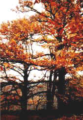
diferencian perfectamente las cuatros estaciones, con las características de
cada una de ellas, en verano calor y buen tiempo, en otoño los colores de las
hojas que se caen, en invierno la nieve y en primavera la explosión de la
naturaleza.
Durante las cuatro estaciones puede
practicar el ciclismo de montaña,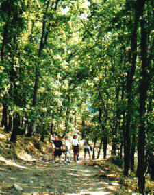 senderismo por las rutas establecidas desde
Casas del Monte a El Torno en el Valle del Jerte, desde la cañada Leonesa puede
ir por todos los pueblos del Valle del Ambroz empezando por aquí y hasta la
Garganta o viceversa, la ruta al Moralejo se la recomendamos por su baja
dificultad y ser muy propia para los paseos matutinos del verano o para los de
la tarde del resto de las épocas, por supuesto puede elegir otras alternativas
no menos interesantes que no están marcadas y que le permitirán descubrir por
si mismo muchos rincones de especial interés.
En los bares, sobre todo los Domingos, a
partir de las doce del mediodía le sirven junto con la consumición un
aperitivo, sin aumento de precio, les recomendamos la morcilla fresca de los
Domingos.
Puede disfrutar de la naturaleza durante
todo el año, en sus distintas etapas y con la flora característica de cada una
de ellas, la cual es muy variada y espléndida.
La cercanía de otras zonas turísticas,
le permitirá visitar en un viaje de pocos kilómetros zonas como La Vera, Valle
del Jerte, Sierra de Gata, Hurdes, Bejar, Plasencia, Hervás, Cáceres,
Trujillo...
Las puestas de sol son de lo mejor
durante todo el año.
Quizás esta sea la estación con menos
color, pero no por ello deja de ser atractiva. Nos ofreces una serie de
posibilidades muy atractivas, vamos a describirlas, con algunas imágenes.
 |
El invierno se caracteriza por sus bajas
temperaturas, como consecuencia nos ofrece un meteoro difícil de ver en
otras épocas (primavera y otoño), nos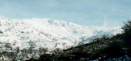
referimos a la nieve. La presencia de esta es casi constante durante
el invierno en la sierra, pera no hay acceso a la sierra así que o se va
andando o bien con el coche a las sierras de Béjar, a la que llegaremos en
media hora, para disfrutar. Sin duda es uno de los mayores atractivos para
los que no suelen tener la suerte de contar con su presencia habitualmente. |
|
Los días de lluvia a veces se hacen
interminables, las temporadas de lluvia se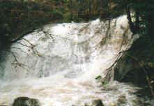
pueden alargar durante semanas, incluso meses como este invierno 2000-2001,
pero para todos aquellos que les gusta ver llover y tener una chimenea al
lado a la que arrimarse para entrar en calor, son sin duda los mejores días
para el recogimiento, aprovechar para leer y sobretodo descansar. Estos
días de lluvia si es un poco intensa y en la sierra está cayendo en forma
de agua y no de nieve, aumenta el caudal de las gargantas considerablemente,
ofreciendo un espectáculo de aguas bravas. Este fenómeno se produce
también en primavera y otoño. Si se hospeda en el albergue podrá estar en
estrecho contacto con la garganta, a poco más de cuatro metros de su cauce. |
|
El sol también luce durante el
invierno, los paseos por rutas y senderos que rodean el pueblo le
proporcionarán una buena dosis de sol invernal y disfrute del contacto con
la naturaleza y la vida rural. En esta época las hojas están totalmente
caídas y el sol penetra por las ramas de los robles, llegando sin problemas
hasta el paseante. |
|
Por la noche lo mejor que se puede hacer
asar unos calbotes en el calbotero,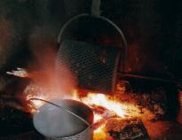
castañas asadas, en la lumbre de la chimenea, entre otras opciones claro
está, como son las de disfrutar de la gastronomía con unas landrillas
cocidas en vino, chorizos y morros a la parrilla, una buena ensalada de
naranjas y si son fiestas de carnavales unas buenas patatas escabechadas, de
postre unas roscas fritas o coquillos con café. |
Durante la primavera, podemos disfrutar de
infinidad de cosas sobre todo al que le guste la naturaleza, que se nos muestra
en su máxima expresión, llena el ambiente de colores y aromas que han
permanecido ocultos durante el invierno.
|
La floración de los cerezos es sin duda
un espectáculo digno de ver, a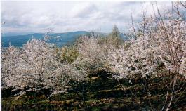 pocos kilómetros está el Valle del
Jerte,
famoso por esto mismo, pero si no quiere sufrir las aglomeraciones del Jerte
le recomendamos que venga aquí para ver en la Huerta el Viejo y en la
Andihuela los cerezos florecidos. No se lo puede perder, la fecha es
difícil de determinar ya que según la climatología pueden florecer
tempranamente o tardío, por lo general suele ser por el 19 de Marzo. |
|
La fresas, cerezas, albaricoques,
brevas, melocotones y un montón de frutas de primavera, de exquisito gusto
y muy abundantes harán las delicias del que le guste la fruta. Son
productos de alta montaña que los podrá conseguir en la cooperativa San
Marcos, por las mañanas. |
|
Los amantes de la naturaleza tienen en
esta estación la mejor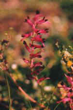 oportunidad para disfrutar de todo su esplendor,
encontrarán la flora característica del ecosistema mediterráneo en la
zona baja del pueblo, bosques atlánticos con sus especies y alta montaña.
Las tres en poco más de 10 kilómetros. Entre las especies de árboles
encontramos encinas, alcornoques, robles, castaños, alisos, hayas, tejos,
acebos, madroños... todos mostrando su máximo esplendor, no sólo estas
especies que nombramos sino también una larga lista de plantas de todas la
familias. |
El verano, estación de las vacaciones por
excelencia, nos proporciona temperaturas altas y sol casi garantizado, invitando
a la realización de actividades al aire libre.
|
Las excursiones a la sierra por todo el
día o por una mañana le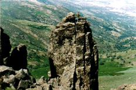 permitirán disfrutar de las vistas hacia los dos
valle, Ambroz y Jerte, si suben un poquito. No se aventuren a irse solos sin
alguien que les acompañe y guíe, siempre y cuando tengan pensado salirse
de las pistas forestales, ya que si se cruzan con una mancha de brezos o
carabones lo pasarán mal para cruzarla. |
|
La piscina natural, totalmente gratis,
hará las delicias de los niños y mayores que se refrescarán en las horas
de calor, pero no sólo está la piscina también los distintos charcos que
ha formado el agua de las gargantas en el granito le permitirán huir de los
lugares convencionales y de la gente, además de disfrutar de rincones
idílicos, algunos de estos están muy escondidos otros de difícil acceso y
otros muy cerca de la piscina, le recomendamos que los busque y los descubra
por si mismo, también puede preguntar. Alrededor de la piscina hay varios
lugares en los que podrá hacer su convencionales y de la gente, además de disfrutar de rincones
idílicos, algunos de estos están muy escondidos otros de difícil acceso y
otros muy cerca de la piscina, le recomendamos que los busque y los descubra
por si mismo, también puede preguntar. Alrededor de la piscina hay varios
lugares en los que podrá hacer su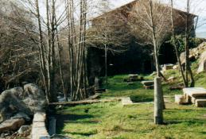 carne a la brasa a la sombra de los
alisos y en mesas que fueron muelas de los molinos o losas de la fábrica de
papel, hoy albergue. |
|
Los chiringuitos que forman parte de la
piscina, ya que están casi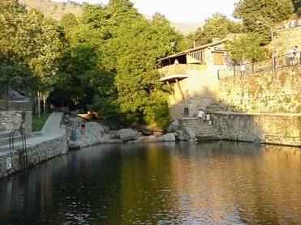 adosados a ella, les ofrecen como especialidad
carne a la brasa, en cuanto a comidas, también sirven aperitivos al
mediodía y por la tarde. Por la noche el frescor de la garganta invita a
subir a los chiringuitos y pasar largas veladas en buena compañía. |
|
Durante todo el verano la diversión
nocturna está servida en los distintas fiestas que se celebran por todos
los pueblos de alrededor, cada fin de semana en un lugar diferente, así le
permitirá conocer los pueblos mientras está de fiesta. |
|
Excursiones a los alrededores, pueden
viajar a La Vera, Valle del Jerte, Las Hurdes, Sierra de Gata, Bejar,
Plasencia, Candelario, Hervás y un poquito más lejos (una hora de camino)
Salamanca, Cáceres y Trujillo. |
|
La gran cantidad de plantas aromáticas
y medicinales que puede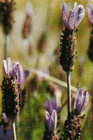 encontrar por el campo harán las delicias de
aquellos que las conozcan y las recolecten, en la siguiente lista le daremos
una relación de algunas plantas que puede encontrar en cantidad: orégano,
poleo, lavanda, tomillo salsero, mentas, prestas, espino albar,hierba
verruguera, hinojo, manzanilla, cornicabra, rusco, zumillo, gordolobo, vinca
pervinca, violeta... |
Una de las estaciones que más
oportunidades ofrece es sin duda el otoño, las temperaturas son agradables, no
hay acumulación de personal y la naturaleza ofrece espectáculos cromáticos.
|
El otoño nos ofrece una riqueza de
colores, que asombran a todo el que lo ve, el amarillo intenso de los
chopos, el rojizo de los cerezos, el amarillo verdoso de los castaños, el
marrón de los robles, marrón oscuro de los alisos, rojo violáceo de las
parras silvestres y un largo etc, de gama cromática, ideal para los
fotógrafos. que lo ve, el amarillo intenso de los
chopos, el rojizo de los cerezos, el amarillo verdoso de los castaños, el
marrón de los robles, marrón oscuro de los alisos, rojo violáceo de las
parras silvestres y un largo etc, de gama cromática, ideal para los
fotógrafos. |
|
Los frutos del otoño son muy variados,
las castañas, higos, uvas, nueces y sobre todo las setas, en esta zona
encontramos champiñones, lepiotas, boletos, niscalos, rebozuelos, rúsulas,
matacandiles, pipa, yesqueros, seta del olivo, amanitas, senderuelas... |
|
La caza también está presente,
conejos, perdices, liebres, jabalíes... |
|